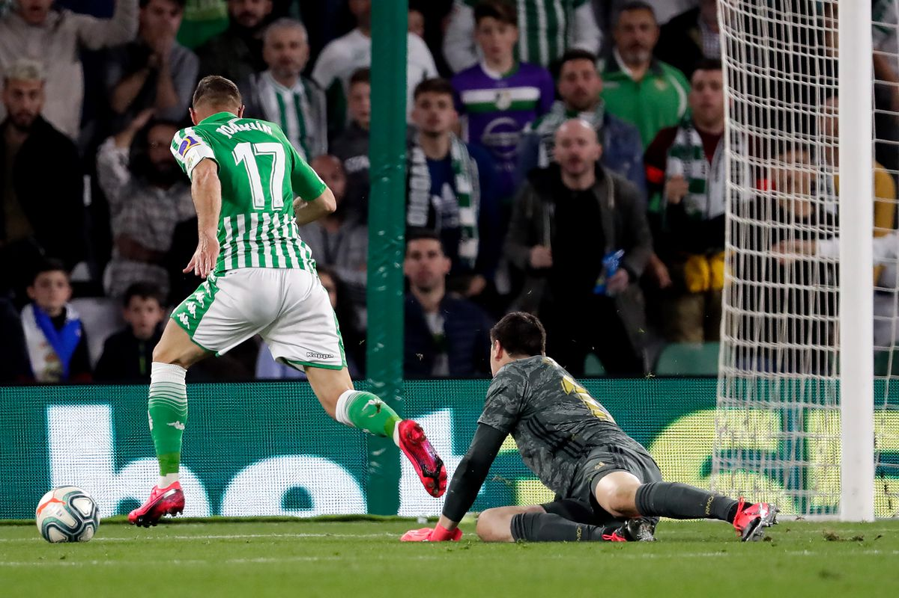

RESULTS :
Matchday 27
| Alaves |
1 - 1 |
Valencia |
| Eibar |
1 - 2 |
Mallorca |
| Atletico |
2 - 2 |
Sevilla |
| Barcelona |
1 - 0 |
R.Socidad |
| Getafe |
0 - 0 |
Celta |
| Osasuna |
1 - 0 |
Espanyol |
| Valladolid |
1 - 4 |
Athletic |
| Levante |
1 - 1 |
Granada |
| Villarreal |
1 - 2 |
Leganes |
| R.Betis |
2 - 1 |
R.Madrid |
SCORRERES :
| # |
Player |
#GOALS |
Club |
| 1. |
Messi |
19 |
Barcelona |
| 2. |
Benzema |
14 |
Real Madrid |
| 3. |
Suarz |
11 |
Barcelona |
| 4. |
Gerard |
11 |
Villa Real |
| 5. |
Ings |
15 |
Southampton |
|
LaLiga NEWS :

Real Madrid defeat from Real Betis
The Betis substitute broke clear and coolly slide the ball past goalkeeper Thibaut Courtois as the hosts picked up only their eighth victory of the season to move up to 12th, eight points clear of the relegation zone.
Rubi's team looked far from a side struggling at the wrong end of the table, causing Real Madrid all sorts of problems as Marc Bartra somehow headed over from six yards out with the whole goal to aim at.
Veteran winger Joaquin went round Courtois and looked to be slipping the ball into an empty net but was denied by Luka Modric's goal-saving interception on the line.
The Belgium international goalkeeper also made a stunning save to tip Nabil Fekir's thunderous, first-time strike over the crossbar.
After taking the lead through Sidnei's superb effort, the goalscorer went from hero to villain by bringing down Marcelo inside the area and allowing Benzema to equalise.
The winner came courtesy of Benzema's loose pass which was picked off by Andres Guardado, who popped the ball off for Tello and he made no mistake.
Real Madrid pushed for the equaliser but Ferland Mendy's curling shot was brilliant tipped onto the crossbar by Joel Robles' flying save and Benzema curled narrowly wide in the 95th minute
Bracelona return to the top
Barcelona struggled to a 1-0 victory over a stubborn Real Sociedad side on Saturday evening, as a controversial Lionel Messi penalty helped la Blaugrana leapfrog Real Madrid at the top of the table
Martin Braithwaite thought he had given the hosts the lead early in the first half, but he was adjudged to have slightly mistimed his run before cooly slotting home, and the effort was pulled back for an offside infringement.
Lionel Messi had the best chance of the first half, but he fired narrowly wide from the edge of the penalty area, and the two sides entered the dressing rooms all square at the break.
The second half saw Sociedad threaten the Spanish champions time and time again on the counter attack, as Martin Odegaard and Aleksander Isak combined dangerously, but the Swedish forward fired wildly wide of goal. Nacho Monreal also flashed a shot wide of the far post as the hosts began to creak at the back.
But Barça were handed the chance to take the lead with ten minutes to go, when VAR penalised Sociedad defender Mikel Oyarzabal for a harsh handball offence, and Messi tucked away the spot-kick expertly.
The visitors pushed to grab an equaliser, but Barça secured all three points, despite having a late Jordi Alba strike ruled out for offside, and Setién's men went two points clear of rivals Madrid at La Liga's summit.
Atletico vs Sevilla end with draw
Atletico Madrid missed the chance to get back into the top four in La Liga when they were held to an entertaining 2-2 draw with third-placed Sevilla on Saturday.
Sevilla went ahead in the 19th minute through Dutch striker Luuk de Jong but Atletico levelled with a penalty from Alvaro Morata in the 32nd after a VAR review determined that Sevilla's Diego Carlos had handled the ball.
Atleti took the lead four minutes later with a heavily deflected shot from Joao Felix, only for Sevilla's Lucas Ocampos to level from the spot right before halftime after another VAR review decided he had been fouled by Kieran Trippier.
Diego Simeone's side went all out for a winner after the interval but were unable to get past Sevilla's impressive keeper Tomas Vaclik and had to settle for a draw which left them fifth on 45 points after 27 games. Sevilla are third on 47.
|
STANDING :
| # |
Club |
Pts. |
| 1 |
Barcelona |
58 |
| 2 |
Real Madrid |
56 |
| 3 |
Sevilla |
47 |
| 4 |
Real Socidad |
46 |
| 5 |
Getafe |
46 |
| 6 |
Atleteco Madrid |
45 |
| 7 |
Valencia |
42 |
| 8 |
Villa Real |
38 |
| 9 |
Granada |
38 |
| 10 |
Athletic Bilbao |
37 |
| 11 |
Osasuna |
34 |
| 12 |
Real Betis |
33 |
| 13 |
Levante |
33 |
| 14 |
Alaves |
32 |
| 15 |
Valladolid |
29 |
| 16 |
Eibar |
27 |
| 17 |
Celta Vigo |
26 |
| 18 |
Mallorca |
25 |
| 19 |
Leganes |
23 |
| 20 |
Espanyol |
20 |
Next week matches :
- Real Madrid - Eibar
- Leganes - Valladolid
- Valencia - Levante
- Mallorca - Barcelona
- Celta Vigo - Villarreal
- Espanyol - Alaves
- Real Sociedad - Osasuna
- Athletic - Atletico
- Granada - Getafe
- Sevilla - Betis
|